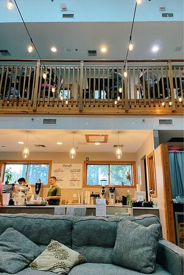

Quantity: give the right amount of information.
Relation: be relevant.
Asking a question: add the question onto an ongoing record of questions that need to be answered.
Discourse—at least involving assertions—always has the goal of answering some question (Roberts 2012).
QUD?

Relation:
Quantity (Part 1):
(Based on example from Levinson (2000).)
What we need: some notion of “possible alternative utterance”.
What if certain lexical items come with scales (Horn 1972)?
How might this help with the symmetry problem?
→ conventional meaning
What is an inference?
Jo did some of the readings.
↝ Jo didn’t do all of the readings.
Could you bring the dog inside?
↝ There is a dog.
Where do inferences come from?
Semantics is the study of conventional meaning in natural language.
Some types of inference observable in natural language:
| entailment | conv. impl. | presupposition | |
|---|---|---|---|
| between | sentences | utterances | expr. + sentence |
| defeasible? | no | yes | no |
Introduction to Semantics